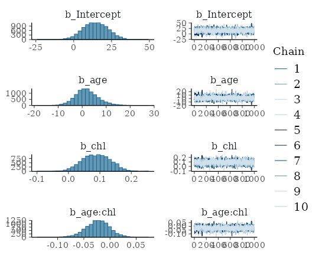
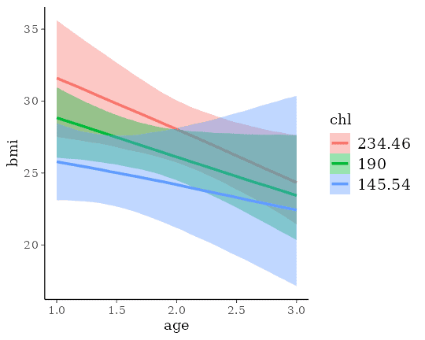
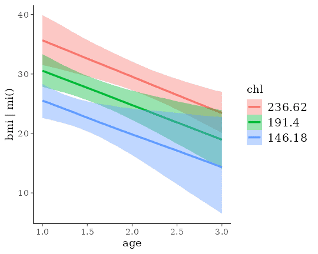

Handle Missing Values with brms
Paul Bürkner
2026-09-04
Source:vignettes/brms_missings.Rmd
brms_missings.RmdIntroduction
Many real world data sets contain missing values for various reasons.
Generally, we have quite a few options to handle those missing values.
The easiest solution is to remove all rows from the data set, where one
or more variables are missing. However, if values are not missing
completely at random, this will likely lead to bias in our analysis.
Accordingly, we usually want to impute missing values in one way or the
other. Here, we will consider two very general approaches using
brms: (1) Impute missing values before the
model fitting with multiple imputation, and (2) impute missing values on
the fly during model fitting1. As a simple example, we will use the
nhanes data set, which contains information on
participants’ age, bmi (body mass index),
hyp (hypertensive), and chl (total serum
cholesterol). For the purpose of the present vignette, we are primarily
interested in predicting bmi by age and
chl.
age bmi hyp chl
1 1 NA NA NA
2 2 22.7 1 187
3 1 NA 1 187
4 3 NA NA NA
5 1 20.4 1 113
6 3 NA NA 184Imputation before model fitting
There are many approaches allowing us to impute missing data before
the actual model fitting takes place. From a statistical perspective,
multiple imputation is one of the best solutions. Each missing value is
not imputed once but m times leading to a total of
m fully imputed data sets. The model can then be fitted to
each of those data sets separately and results are pooled across models,
afterwards. One widely applied package for multiple imputation is
mice (Buuren & Groothuis-Oudshoorn, 2010) and we
will use it in the following in combination with brms.
Here, we apply the default settings of mice, which
means that all variables will be used to impute missing values in all
other variables and imputation functions automatically chosen based on
the variables’ characteristics.
Now, we have m = 5 imputed data sets stored within the
imp object. In practice, we will likely need more than
5 of those to accurately account for the uncertainty
induced by the missingness, perhaps even in the area of 100
imputed data sets (Zhou & Reiter, 2010). Of course, this increases
the computational burden by a lot and so we stick to m = 5
for the purpose of this vignette. Regardless of the value of
m, we can either extract those data sets and then pass them
to the actual model fitting function as a list of data frames, or pass
imp directly. The latter works because
brms offers special support for data imputed by
mice. We will go with the latter approach, since it is
less typing. Fitting our model of interest with brms to
the multiple imputed data sets is straightforward.
fit_imp1 <- brm_multiple(bmi ~ age*chl, data = imp, chains = 2)The returned fitted model is an ordinary brmsfit object
containing the posterior draws of all m submodels. While
pooling across models is not necessarily straightforward in classical
statistics, it is trivial in a Bayesian framework. Here, pooling results
of multiple imputed data sets is simply achieved by combining the
posterior draws of the submodels. Accordingly, all post-processing
methods can be used out of the box without having to worry about pooling
at all.
summary(fit_imp1) Family: gaussian
Links: mu = identity
Formula: bmi ~ age * chl
Data: imp (Number of observations: 25)
Draws: 10 chains, each with iter = 2000; warmup = 1000; thin = 1;
total post-warmup draws = 10000
Regression Coefficients:
Estimate Est.Error l-95% CI u-95% CI
Intercept 14.38 8.28 -1.73 30.16
age 1.91 4.90 -7.11 12.49
chl 0.09 0.04 0.00 0.17
age:chl -0.02 0.02 -0.07 0.02
Further Distributional Parameters:
Estimate Est.Error l-95% CI u-95% CI
sigma 3.34 0.77 2.13 5.09
Draws were sampled using sampling(NUTS). Overall Rhat and ESS estimates
are not informative for brm_multiple models and are hence not displayed.
Please see ?brm_multiple for how to assess convergence in case of such models.In the summary output, we notice that some Rhat values
are higher than \(1.1\) indicating
possible convergence problems. For models based on multiple imputed data
sets, this is often a false positive: Chains of
different submodels may not overlay each other exactly, since there were
fitted to different data. We can see the chains on the right-hand side
of
plot(fit_imp1, variable = "^b", regex = TRUE)
Such non-overlaying chains imply high Rhat values
without there actually being any convergence issue. Accordingly, we have
to investigate the convergence of the submodels separately, which we can
do for example via:
library(posterior)
draws <- as_draws_array(fit_imp1)
# every dataset has nc = 2 chains in this example
nc <- nchains(fit_imp1) / m
draws_per_dat <- lapply(1:m,
\(i) subset_draws(draws, chain = ((i-1)*nc+1):(i*nc))
)
lapply(draws_per_dat, summarise_draws, default_convergence_measures())[[1]]
[38;5;246m# A tibble: 8 × 4
[39m
variable rhat ess_bulk ess_tail
[3m
[38;5;246m<chr>
[39m
[23m
[3m
[38;5;246m<dbl>
[39m
[23m
[3m
[38;5;246m<dbl>
[39m
[23m
[3m
[38;5;246m<dbl>
[39m
[23m
[38;5;250m1
[39m b_Intercept 1.00 548. 827.
[38;5;250m2
[39m b_age 1.00 546. 778.
[38;5;250m3
[39m b_chl 1.00 579. 855.
[38;5;250m4
[39m b_age:chl 1.00 512. 817.
[38;5;250m5
[39m sigma 1.00 885. 951.
[38;5;250m6
[39m Intercept 1.00
[4m1
[24m115.
[4m1
[24m078.
[38;5;250m7
[39m lprior 1.01 836. 932.
[38;5;250m8
[39m lp__ 1.00 711. 877.
[[2]]
[38;5;246m# A tibble: 8 × 4
[39m
variable rhat ess_bulk ess_tail
[3m
[38;5;246m<chr>
[39m
[23m
[3m
[38;5;246m<dbl>
[39m
[23m
[3m
[38;5;246m<dbl>
[39m
[23m
[3m
[38;5;246m<dbl>
[39m
[23m
[38;5;250m1
[39m b_Intercept 1.00 593. 890.
[38;5;250m2
[39m b_age 1.00 584. 934.
[38;5;250m3
[39m b_chl 1.00 612. 876.
[38;5;250m4
[39m b_age:chl 1.00 558. 877.
[38;5;250m5
[39m sigma 1.00 845. 690.
[38;5;250m6
[39m Intercept 1.00 864. 795.
[38;5;250m7
[39m lprior 1.00 734. 649.
[38;5;250m8
[39m lp__ 1.00 470. 762.
[[3]]
[38;5;246m# A tibble: 8 × 4
[39m
variable rhat ess_bulk ess_tail
[3m
[38;5;246m<chr>
[39m
[23m
[3m
[38;5;246m<dbl>
[39m
[23m
[3m
[38;5;246m<dbl>
[39m
[23m
[3m
[38;5;246m<dbl>
[39m
[23m
[38;5;250m1
[39m b_Intercept 1.00 696.
[4m1
[24m009.
[38;5;250m2
[39m b_age 1.01 673. 845.
[38;5;250m3
[39m b_chl 1.00 752.
[4m1
[24m042.
[38;5;250m4
[39m b_age:chl 1.00 660. 718.
[38;5;250m5
[39m sigma 1.000 961. 979.
[38;5;250m6
[39m Intercept 1.00
[4m1
[24m069. 882.
[38;5;250m7
[39m lprior 1.00 881. 994.
[38;5;250m8
[39m lp__ 1.000 645. 975.
[[4]]
[38;5;246m# A tibble: 8 × 4
[39m
variable rhat ess_bulk ess_tail
[3m
[38;5;246m<chr>
[39m
[23m
[3m
[38;5;246m<dbl>
[39m
[23m
[3m
[38;5;246m<dbl>
[39m
[23m
[3m
[38;5;246m<dbl>
[39m
[23m
[38;5;250m1
[39m b_Intercept 1.00 717. 752.
[38;5;250m2
[39m b_age 1.00 724. 858.
[38;5;250m3
[39m b_chl 1.01 723. 799.
[38;5;250m4
[39m b_age:chl 1.01 673. 820.
[38;5;250m5
[39m sigma 1.00
[4m1
[24m028.
[4m1
[24m104.
[38;5;250m6
[39m Intercept 1.00
[4m1
[24m109.
[4m1
[24m156.
[38;5;250m7
[39m lprior 1.00 979.
[4m1
[24m067.
[38;5;250m8
[39m lp__ 1.00 621. 859.
[[5]]
[38;5;246m# A tibble: 8 × 4
[39m
variable rhat ess_bulk ess_tail
[3m
[38;5;246m<chr>
[39m
[23m
[3m
[38;5;246m<dbl>
[39m
[23m
[3m
[38;5;246m<dbl>
[39m
[23m
[3m
[38;5;246m<dbl>
[39m
[23m
[38;5;250m1
[39m b_Intercept 1.01 686. 769.
[38;5;250m2
[39m b_age 1.01 710. 657.
[38;5;250m3
[39m b_chl 1.01 702. 953.
[38;5;250m4
[39m b_age:chl 1.01 688. 651.
[38;5;250m5
[39m sigma 1.00 890. 837.
[38;5;250m6
[39m Intercept 1.00
[4m1
[24m276. 992.
[38;5;250m7
[39m lprior 1.00 827. 681.
[38;5;250m8
[39m lp__ 1.00 767. 914.The convergence of each of the submodels looks good. Accordingly, we
can proceed with further post-processing and interpretation of the
results. For instance, we could investigate the combined effect of
age and chl.
conditional_effects(fit_imp1, "age:chl")
To summarize, the advantages of multiple imputation are obvious: One can apply it to all kinds of models, since model fitting functions do not need to know that the data sets were imputed, beforehand. Also, we do not need to worry about pooling across submodels when using fully Bayesian methods. The only drawback is the amount of time required for model fitting. Estimating Bayesian models is already quite slow with just a single data set and it only gets worse when working with multiple imputation.
Compatibility with other multiple imputation packages
brms offers built-in support for
mice mainly because I use the latter in some of my own
research projects. Nevertheless, brm_multiple supports all
kinds of multiple imputation packages as it also accepts a list
of data frames as input for its data argument. Thus, you
just need to extract the imputed data frames in the form of a list,
which can then be passed to brm_multiple. Most multiple
imputation packages have some built-in functionality for this task. When
using the mi package, for instance, you simply need to
call the mi::complete function to get the desired
output.
Imputation during model fitting
Imputation during model fitting is generally thought to be more
complex than imputation before model fitting, because one has to take
care of everything within one step. This remains true when imputing
missing values with brms, but possibly to a somewhat
smaller degree. Consider again the nhanes data with the
goal to predict bmi by age, and
chl. Since age contains no missing values, we
only have to take special care of bmi and chl.
We need to tell the model two things. (1) Which variables contain
missing values and how they should be predicted, as well as (2) which of
these imputed variables should be used as predictors. In
brms we can do this as follows:
bform <- bf(bmi | mi() ~ age * mi(chl)) +
bf(chl | mi() ~ age) + set_rescor(FALSE)
fit_imp2 <- brm(bform, data = nhanes)The model has become multivariate, as we no longer only predict
bmi but also chl (see
vignette("brms_multivariate") for details about the
multivariate syntax of brms). We ensure that missings
in both variables will be modeled rather than excluded by adding
| mi() on the left-hand side of the formulas2. We write
mi(chl) on the right-hand side of the formula for
bmi to ensure that the estimated missing values of
chl will be used in the prediction of bmi. The
summary is a bit more cluttered as we get coefficients for both response
variables, but apart from that we can interpret coefficients in the
usual way.
summary(fit_imp2) Family: MV(gaussian, gaussian)
Links: mu = identity
mu = identity
Formula: bmi | mi() ~ age * mi(chl)
chl | mi() ~ age
Data: nhanes (Number of observations: 25)
Draws: 4 chains, each with iter = 2000; warmup = 1000; thin = 1;
total post-warmup draws = 4000
Regression Coefficients:
Estimate Est.Error l-95% CI u-95% CI Rhat Bulk_ESS Tail_ESS
bmi_Intercept 13.50 9.09 -4.36 31.65 1.00 1598 2038
chl_Intercept 137.73 22.33 92.68 182.01 1.00 3899 2969
bmi_age -4.51 5.88 -16.39 6.69 1.00 1295 1781
chl_age 31.00 11.62 7.51 53.90 1.00 3603 2803
bmi_michl 0.12 0.05 0.03 0.21 1.00 1743 2098
bmi_michl:age -0.01 0.03 -0.06 0.04 1.00 1380 1940
Further Distributional Parameters:
Estimate Est.Error l-95% CI u-95% CI Rhat Bulk_ESS Tail_ESS
sigma_bmi 3.32 0.75 2.19 5.10 1.00 1468 2242
sigma_chl 36.67 6.79 26.34 52.47 1.00 2793 2688
Draws were sampled using sampling(NUTS). For each parameter, Bulk_ESS
and Tail_ESS are effective sample size measures, and Rhat is the potential
scale reduction factor on split chains (at convergence, Rhat = 1).
conditional_effects(fit_imp2, "age:chl", resp = "bmi")
The results look pretty similar to those obtained from multiple
imputation, but be aware that this may not be generally the case. In
multiple imputation, the default is to impute all variables based on all
other variables, while in the ‘one-step’ approach, we have to explicitly
specify the variables used in the imputation. Thus, arguably, multiple
imputation is easier to apply. An obvious advantage of the ‘one-step’
approach is that the model needs to be fitted only once instead of
m times. Also, within the brms framework,
we can use multilevel structure and complex non-linear relationships for
the imputation of missing values, which is not achieved as easily in
standard multiple imputation software. On the downside, it is currently
not possible to impute discrete variables, because Stan
(the engine behind brms) does not allow estimating
discrete parameters.
Combining measurement error and missing values
Missing value terms in brms cannot only handle
missing values but also measurement error, or arbitrary combinations of
the two. In fact, we can think of a missing value as a value with
infinite measurement error. Thus, mi terms are a natural
(and somewhat more verbose) generalization of the now soft deprecated
me terms. Suppose we had measured the variable
chl with some known error:
Then we can go ahead an include this information into the model as follows:
bform <- bf(bmi | mi() ~ age * mi(chl)) +
bf(chl | mi(se) ~ age) + set_rescor(FALSE)
fit_imp3 <- brm(bform, data = nhanes)Summarizing and post-processing the model continues to work as usual.
References
Buuren, S. V. & Groothuis-Oudshoorn, K. (2010). mice: Multivariate imputation by chained equations in R. Journal of Statistical Software, 1-68. doi.org/10.18637/jss.v045.i03
Zhou, X. & Reiter, J. P. (2010). A Note on Bayesian Inference After Multiple Imputation. The American Statistician, 64(2), 159-163. doi.org/10.1198/tast.2010.09109